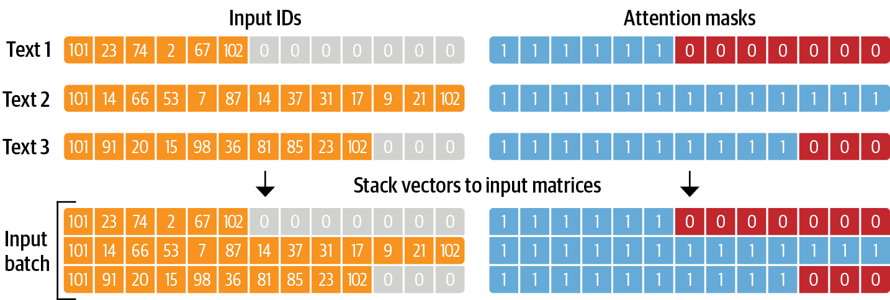

センチメント分析の実装#
環境配置#
conda create -n nlp_workshop
sudo apt install python3-pip
pip install -r requirements.txt
!pip install transformers
!pip install datasets
!pip install fugashi
!pip install ipadic
!pip install torch
!pip install accelerate -U
!pip install pytorch_pretrained_bert
!pip install scikit-learn
サンプルデータ#
サンプルデータの取得#
Hugging Faceのには色々なデータセットが用意されております。例として、多言語のセンチメントデータセットのうち、日本語のサブセットを使用します。
以下を実行しデータセットを取得します。
from datasets import load_dataset
dataset = load_dataset("tyqiangz/multilingual-sentiments", "japanese")
/home/lyuzeyu/anaconda3/envs/nlp_workshop/lib/python3.10/site-packages/tqdm/auto.py:21: TqdmWarning: IProgress not found. Please update jupyter and ipywidgets. See https://ipywidgets.readthedocs.io/en/stable/user_install.html
from .autonotebook import tqdm as notebook_tqdm
サンプルデータの確認#
取得したデータセットの中身を確認します。
データセットはこのようにtrain, validation, testに分かれています。
[‘text’, ‘source’, ‘label’]といった情報を持っています。
dataset
DatasetDict({
train: Dataset({
features: ['text', 'source', 'label'],
num_rows: 120000
})
validation: Dataset({
features: ['text', 'source', 'label'],
num_rows: 3000
})
test: Dataset({
features: ['text', 'source', 'label'],
num_rows: 3000
})
})
dataset.set_format(type="pandas")
train_df = dataset["train"][:]
train_df.head(5)
| text | source | label | |
|---|---|---|---|
| 0 | 普段使いとバイクに乗るときのブーツ兼用として購入しました。見た目や履き心地は良いです。 しか... | amazon_reviews_multi | 2 |
| 1 | 十分な在庫を用意できない販売元も悪いですが、Amazonやら楽⚪︎が転売を認めちゃってるのが... | amazon_reviews_multi | 2 |
| 2 | 見た目はかなりおしゃれで気に入りました。2、3回持ち歩いた後いつも通りゼンマイを巻いていたら... | amazon_reviews_multi | 2 |
| 3 | よくある部分での断線はしませんでした ただiphoneとの接続部で接触不良、折れました ip... | amazon_reviews_multi | 2 |
| 4 | プラモデルの塗装剥離に使う為に購入 届いて早速使ってみた 結果 １ヶ月経っても未だに剥離出来... | amazon_reviews_multi | 2 |
各ラベルの意味につい確認すると、\(0\),\(1\),\(2\)がそれぞれ’positive’,‘neutral’,’negative’に割り当てられていることが分かります。
ラベルの内訳も確認します。
dataset["train"].features
{'text': Value(dtype='string', id=None),
'source': Value(dtype='string', id=None),
'label': ClassLabel(names=['positive', 'neutral', 'negative'], id=None)}
import matplotlib.pyplot as plt
train_df["label"].value_counts(ascending=True).plot(kind="barh", title="Train Dataset")
<Axes: title={'center': 'Train Dataset'}, ylabel='label'>

テキストの確認#
Transformerモデルは、最大コンテキストサイズ(maximum context size)と呼ばれる最大入力系列長があります。
モデルのコンテキストサイズより長いテキストは切り捨てる必要があり、切り捨てたテキストに重要な情報が含まれている場合、性能の低下につながることがあります。
train_df["text_length"]=train_df["text"].str.len()
train_df.boxplot(column="text_length", by="label", figsize=(12, 6))
<Axes: title={'center': 'text_length'}, xlabel='label'>
トークン化#
コンピュータは、入力として生の文字列を受け取ることができません。その代わりに、テキストがトークン化され、数値ベクトルとしてエンコードされていることが想定しています。
トークン化は、文字列をモデルで使用される最小単位に分解するステップです。
Transformerライブラリー は便利なAutoTokenizerクラスを提供しており、事前学習済みモデルに関連つけられたトークナイザーを素早く使用することができます。
トークナイザの動作確認#
from transformers import AutoTokenizer
model_ckpt = "cl-tohoku/bert-base-japanese-whole-word-masking"
tokenizer = AutoTokenizer.from_pretrained(model_ckpt)
トークナイザを動かしてみましょう。
for line in train_df["text"][0].split('。'):
print(line)
普段使いとバイクに乗るときのブーツ兼用として購入しました
見た目や履き心地は良いです
しかし、２ヶ月履いたらゴム底が削れて無くなりました
また、バイクのシフトペダルとの摩擦で表皮が剥がれ、本革でないことが露呈しました
ちなみに防水とも書いていますが、雨の日は内部に水が染みます
安くて見た目も良く、履きやすかったのですが、耐久性のなさ、本革でも防水でも無かったことが残念です
結局、本革の防水ブーツを買い直しました
sample_text_encoded = tokenizer(train_df["text"][0])
sample_text_encoded
{'input_ids': [2, 9406, 3276, 13, 10602, 7, 11838, 900, 5, 20806, 23540, 50, 2630, 15, 3913, 10, 8, 16493, 49, 6934, 28512, 18166, 9, 3614, 2992, 8, 373, 6, 25, 2779, 26909, 3318, 9007, 5366, 14, 3346, 28461, 16, 27430, 3913, 10, 8, 106, 6, 10602, 5, 10334, 22757, 13, 5, 13245, 12, 311, 29742, 14, 7520, 13468, 6, 108, 1869, 12, 80, 45, 14, 3438, 30294, 15, 3913, 10, 8, 5501, 25997, 981, 2977, 16, 21, 2610, 14, 6, 3741, 5, 32, 9, 2804, 7, 326, 14, 4896, 28614, 2610, 8, 18002, 16, 16493, 28, 5735, 6, 6934, 28512, 2076, 187, 10, 5, 2992, 14, 6, 10284, 245, 5, 18, 26, 6, 108, 1869, 12, 28, 25997, 12, 28, 6013, 10, 45, 14, 25267, 2992, 8, 3351, 6, 108, 1869, 5, 25997, 20806, 11, 5098, 13153, 3913, 10, 8, 3], 'token_type_ids': [0, 0, 0, 0, 0, 0, 0, 0, 0, 0, 0, 0, 0, 0, 0, 0, 0, 0, 0, 0, 0, 0, 0, 0, 0, 0, 0, 0, 0, 0, 0, 0, 0, 0, 0, 0, 0, 0, 0, 0, 0, 0, 0, 0, 0, 0, 0, 0, 0, 0, 0, 0, 0, 0, 0, 0, 0, 0, 0, 0, 0, 0, 0, 0, 0, 0, 0, 0, 0, 0, 0, 0, 0, 0, 0, 0, 0, 0, 0, 0, 0, 0, 0, 0, 0, 0, 0, 0, 0, 0, 0, 0, 0, 0, 0, 0, 0, 0, 0, 0, 0, 0, 0, 0, 0, 0, 0, 0, 0, 0, 0, 0, 0, 0, 0, 0, 0, 0, 0, 0, 0, 0, 0, 0, 0, 0, 0, 0, 0, 0, 0, 0, 0, 0, 0, 0, 0, 0, 0, 0], 'attention_mask': [1, 1, 1, 1, 1, 1, 1, 1, 1, 1, 1, 1, 1, 1, 1, 1, 1, 1, 1, 1, 1, 1, 1, 1, 1, 1, 1, 1, 1, 1, 1, 1, 1, 1, 1, 1, 1, 1, 1, 1, 1, 1, 1, 1, 1, 1, 1, 1, 1, 1, 1, 1, 1, 1, 1, 1, 1, 1, 1, 1, 1, 1, 1, 1, 1, 1, 1, 1, 1, 1, 1, 1, 1, 1, 1, 1, 1, 1, 1, 1, 1, 1, 1, 1, 1, 1, 1, 1, 1, 1, 1, 1, 1, 1, 1, 1, 1, 1, 1, 1, 1, 1, 1, 1, 1, 1, 1, 1, 1, 1, 1, 1, 1, 1, 1, 1, 1, 1, 1, 1, 1, 1, 1, 1, 1, 1, 1, 1, 1, 1, 1, 1, 1, 1, 1, 1, 1, 1, 1, 1]}
結果にinput_idsとattention_maskが含まれます。
input_ids: 数字にエンコードされたトークン
attention_mask: モデルで有効なトークンかどうかを判別するためのマスクです。無効なトークン（例えば、PADなど）に対しては、attention_maskを\(0\)として処理します。
各batchにおいて、入力系列はbatch内最大系列長までpaddingされます。

トークナイザの結果は数字にエンコードされているため、トークン文字列を得るには、convert_ids_to_tokensを用います。
tokens = tokenizer.convert_ids_to_tokens(sample_text_encoded.input_ids)
print(tokens)
['[CLS]', '普段', '使い', 'と', 'バイク', 'に', '乗る', 'とき', 'の', 'ブーツ', '兼用', 'として', '購入', 'し', 'まし', 'た', '。', '見た目', 'や', '履', '##き', '心地', 'は', '良い', 'です', '。', 'しかし', '、', '2', 'ヶ月', '履い', 'たら', 'ゴム', '底', 'が', '削', '##れ', 'て', '無くなり', 'まし', 'た', '。', 'また', '、', 'バイク', 'の', 'シフト', 'ペダル', 'と', 'の', '摩擦', 'で', '表', '##皮', 'が', '剥', '##がれ', '、', '本', '革', 'で', 'ない', 'こと', 'が', '露', '##呈', 'し', 'まし', 'た', '。', 'ちなみに', '防水', 'とも', '書い', 'て', 'い', 'ます', 'が', '、', '雨', 'の', '日', 'は', '内部', 'に', '水', 'が', '染', '##み', 'ます', '。', '安く', 'て', '見た目', 'も', '良く', '、', '履', '##き', 'やす', '##かっ', 'た', 'の', 'です', 'が', '、', '耐久', '性', 'の', 'な', 'さ', '、', '本', '革', 'で', 'も', '防水', 'で', 'も', '無かっ', 'た', 'こと', 'が', '残念', 'です', '。', '結局', '、', '本', '革', 'の', '防水', 'ブーツ', 'を', '買い', '直し', 'まし', 'た', '。', '[SEP]']
文の開始が[CLS]、文の終了が[SEP]という特殊なトークンとなっています。
データセット全体のトークン化#
教師データのサイズが大きいのため、学習するのはかなり時間がかかりますので、ここでは一部の教師データしか使わない。
def tokenize(batch):
return tokenizer(batch["text"], padding=True, truncation=True)
dataset.reset_format()
shuffled_train_data = dataset['train'].shuffle(seed=42)
# Define the size of the subset you want to obtain, e.g., 10%
subset_size = int(0.1 * len(shuffled_train_data))
# Extract the subset
subset = shuffled_train_data.select(range(subset_size))
dataset["train"]=subset
dataset_encoded = dataset.map(tokenize, batched=True, batch_size=None)
import pandas as pd
sample_encoded = dataset_encoded["train"][0]
pd.DataFrame(
[sample_encoded["input_ids"]
, sample_encoded["attention_mask"]
, tokenizer.convert_ids_to_tokens(sample_encoded["input_ids"])],
['input_ids', 'attention_mask', "tokens"]
).T
| input_ids | attention_mask | tokens | |
|---|---|---|---|
| 0 | 2 | 1 | [CLS] |
| 1 | 57 | 1 | 4 |
| 2 | 181 | 1 | つ |
| 3 | 2630 | 1 | 購入 |
| 4 | 15 | 1 | し |
| ... | ... | ... | ... |
| 507 | 0 | 0 | [PAD] |
| 508 | 0 | 0 | [PAD] |
| 509 | 0 | 0 | [PAD] |
| 510 | 0 | 0 | [PAD] |
| 511 | 0 | 0 | [PAD] |
512 rows × 3 columns
分類器の実装#
事前学習モデルの導入#
Transformerライブラリは事前学習モデルの使用ためAutoModelクラスを提供します。
AutoModelクラスはトークンエンコーディングを埋め込みに変換し、エンコーダスタックを経由して最後の隠れ状態を返します。
特に、AutoModelForSequenceClassificationはテキスト分類専用のクラスになります。
特徴抽出器としてのTansformer#
先述したように、特徴抽出の際、事前学習済みモデルのパラメータを凍結し、隠れ状態を分類器の特徴として利用します。
ここでは、テキストからどのように「状態」を抽出するか確認してみましょう。
import torch
from transformers import AutoModel
# GPUある場合はGPUを使う
device = torch.device("cuda" if torch.cuda.is_available() else "cpu")
model = AutoModel.from_pretrained(model_ckpt).to(device)
最初に、文字列をエンコーダしてトークンをPyTorchのテンソルに変換する必要があります。
結果として得られるテンソルは[batch_size,n_tokens]という形状です。
inputs = tokenizer("普段使いとバイクに乗るときのブーツ兼用として購入しました", return_tensors="pt") # pytorch tensorに変換するためにreturn_tensors="pt"を指定
print(f"Input tensor shape: {inputs['input_ids'].shape}")
Input tensor shape: torch.Size([1, 17])
得られるテンソルをモデルの入力として渡します。
モデルと同じデバイス(GPU or CPU)に設置します。
計算のメモリを減らせるため、
torch.no_grad()で、勾配の自動計算を無効します。出力には隠れ状態、損失、アテンションのオブジェクトが含まれます。
inputs = {k: v.to(device) for k, v in inputs.items()}
with torch.no_grad():
outputs = model(**inputs)
print(outputs)
BaseModelOutputWithPoolingAndCrossAttentions(last_hidden_state=tensor([[[-0.0847, 0.1351, -0.4395, ..., -0.4982, -0.6514, -0.1812],
[ 0.4598, 0.2293, 0.4841, ..., -0.0054, -0.3884, 0.1130],
[-0.3693, 0.2047, -0.1484, ..., 0.8140, -0.5375, 0.2806],
...,
[-0.0969, -0.1981, 0.0768, ..., -0.6792, -0.8054, -0.2304],
[-0.2894, 0.4070, -0.1595, ..., -0.5203, -0.5699, 0.0417],
[-0.4710, 0.2821, -0.6042, ..., -0.7786, 0.1858, 0.4220]]],
device='cuda:0'), pooler_output=tensor([[-0.6927, -0.0295, -0.1822, -0.2144, 0.1109, 0.9984, -0.1162, -0.1416,
-0.4032, 0.2412, -0.5233, 0.0353, -0.1194, 0.4348, -0.1704, -0.0522,
0.3496, 0.1107, 0.3005, 0.4705, 0.2974, 0.2746, -0.3991, 0.9181,
0.9999, -0.1110, 0.4712, -0.4118, 0.9997, 0.8054, -0.8208, 0.6063,
-0.1102, 0.4874, 0.3033, 0.0817, 0.3873, -0.3044, -0.1805, 0.0040,
-0.2526, -0.9986, -0.5488, 0.1878, 0.8630, -0.1465, 0.3296, -0.0738,
0.2411, -0.1666, -0.0074, -0.9318, 0.3535, -1.0000, -0.1380, 0.0230,
-0.0388, -0.3269, -0.4060, 0.8335, 0.9801, 0.9810, 0.2134, 0.4827,
-0.1189, 0.3543, 0.0271, 0.2525, -0.2036, 0.9700, -0.3991, 0.3111,
-0.1952, 0.3861, 0.2520, -0.0773, 0.9991, -0.2477, 0.5794, 0.1457,
-0.9651, 0.1088, -0.2396, 0.3358, -0.9804, 0.3841, -0.3508, -0.9078,
-0.0669, 0.8357, 0.3222, -0.9854, -0.0054, -0.1114, -0.3614, 0.1300,
-0.0294, 0.5134, -0.1713, 0.3719, 0.5120, 0.3396, -0.2546, -0.0502,
0.2817, 0.3161, -0.3300, 0.1138, -0.4520, 0.2893, 0.0358, -0.4225,
-0.2481, 0.0575, -0.0693, -0.1615, -0.2284, -0.0144, -0.1649, 0.3037,
0.1274, -0.1724, 0.2603, -0.2085, -0.9759, -0.9997, -0.3886, -0.1235,
0.4380, -0.3623, 0.0751, 0.0190, 0.0688, -0.0225, -0.2510, -0.2897,
0.2137, 0.1473, 0.1002, 0.4464, -0.4578, 0.9340, 0.2989, 0.2132,
-0.9998, 0.2729, 0.2273, 0.1139, -0.0555, 0.2499, -0.3300, 0.0276,
0.0496, -0.2926, -0.0470, 0.4303, -0.5139, 0.0564, -0.0214, -0.2855,
-0.4448, -0.1472, -0.1856, -0.4987, -0.1770, -0.0490, -0.0662, 0.5385,
0.9973, 0.8412, 0.0486, 0.8002, 0.1535, -0.8492, 0.1233, 0.4598,
0.0305, 0.0997, 0.3172, 0.2970, -0.3180, 0.3115, 0.5462, -0.1138,
-0.2239, 0.0833, -0.1717, -0.3981, -0.9788, -0.3960, 0.3823, 0.6812,
0.0461, -0.1201, -0.2163, -0.0892, -0.1594, 0.3204, 0.2186, 0.9579,
-0.9803, 0.0681, -0.0109, 0.2642, -0.3340, -0.1600, -0.9881, 0.5563,
-0.3445, -0.0424, -0.5417, -0.2405, -0.5805, 0.9687, 0.9917, -0.0311,
-0.3275, 0.0360, 0.2920, -0.1643, -0.0796, 0.3886, 0.5621, 0.1660,
0.0079, -0.0710, -0.2579, 0.6055, 0.0045, 0.9752, 0.9980, -0.0940,
0.5284, -0.4565, 0.0078, 0.2019, -0.4227, 0.2240, -0.0416, -0.2271,
0.1212, 0.2846, 0.1608, 0.9994, -0.1599, 0.1713, 0.0453, -0.1499,
-0.3036, 0.0932, -0.9999, 0.0656, 0.0483, 0.2180, -0.0547, 0.1452,
0.9993, -0.3855, 0.9990, -0.1814, 0.1848, -0.9741, -0.2543, -0.3599,
0.9993, -0.0645, 0.0893, -0.3064, 0.5449, 0.9973, 0.2142, 0.2201,
0.7750, -0.1518, -0.4040, 0.2065, -0.1812, -0.8215, -0.6682, -0.0249,
0.2015, 0.5255, -0.6134, 0.9997, 0.1495, -0.1094, -0.4406, 0.4066,
-0.3155, -0.9998, 0.6849, -0.4723, -0.2980, 0.2190, -0.2693, 0.3308,
0.1593, -0.4872, 0.0867, 0.9786, -0.2116, -0.9631, 0.4794, 0.2634,
-0.0820, 0.1713, -0.9999, -0.2893, -0.2268, -0.9995, 0.5935, 0.0411,
-0.9883, -0.1246, -0.2623, 0.2461, -0.2406, -0.0327, -0.0691, -0.1941,
-0.3231, -0.0342, 0.9799, -0.3241, -0.4906, -0.1406, -0.8911, 0.1326,
-0.0649, 0.4594, 0.1995, -0.6390, 0.2726, 0.0391, -0.0993, 0.2031,
0.2548, -0.1260, -0.4031, -0.3218, 0.2221, -0.9239, -0.5307, -0.1020,
0.0839, -0.0890, -0.0913, -0.2360, -0.2388, 0.0945, -0.1854, -0.0124,
0.2735, -0.2144, -0.1221, 0.1448, 0.4081, -0.1749, -0.9785, -0.2424,
-0.3286, 0.9893, -0.2978, 0.0545, -0.9993, 0.9608, -0.4015, -0.2760,
-0.0017, 0.1107, 0.2176, -0.6346, 0.1359, 0.3765, 0.3496, -0.8578,
0.3218, -0.2638, 0.4724, 0.9998, 0.0384, 0.4835, -0.0359, 0.3321,
-0.4080, -0.9687, -0.4049, -0.2404, 0.2280, -0.1353, -0.2476, 0.7799,
-0.4747, 0.4389, -0.1416, 0.3132, 0.3706, 0.2062, -0.2090, -0.2847,
-0.2985, 0.0191, 0.5114, -0.1107, 0.2303, -0.9840, -0.1441, -0.3769,
0.0664, 0.1790, 0.0917, 0.1832, 0.1429, -0.9999, -0.0924, -0.0892,
-0.8874, -0.9999, 0.3335, 0.2645, 0.4279, 0.3519, -0.5411, -0.0465,
0.0438, -0.9562, 0.3886, -0.4841, -0.4459, 0.2417, -0.9990, 0.9999,
0.1652, 0.2355, 0.0581, -0.3729, 0.4603, 0.9958, -0.2107, 0.9852,
-0.4382, 0.2611, -0.1247, 0.3441, 0.1949, -0.8457, 0.9189, 0.2063,
-0.5906, 0.2919, 0.9987, 0.2658, 0.1758, 0.9397, 0.2186, -0.2577,
0.3954, -0.8285, -0.5589, -0.0390, -0.0438, -0.1297, 0.3994, -0.9258,
0.8070, 0.9998, 0.0421, -0.8149, 0.4079, -0.4126, -0.0585, 0.0557,
-0.1657, 0.2321, 0.1914, -0.2129, 0.0566, -0.3396, -0.9643, 0.5129,
-0.9905, -0.0750, 0.1036, -0.9999, 0.3979, -0.3521, 0.0131, -0.2488,
-0.9503, -0.4691, 0.9999, 0.0071, 0.2643, -0.3159, -0.1569, -0.1050,
-0.2257, 0.4395, 0.9866, 0.0250, 0.3068, -0.9999, 0.1025, 0.3324,
0.3680, -0.2935, -0.1708, -0.0687, 0.0902, -0.9979, -0.0653, -0.3548,
-0.0025, -0.1129, 0.0865, -0.0138, -0.4222, 0.0381, -0.2172, -0.9892,
-0.1865, 0.3334, -0.3601, 0.9952, 0.3122, 0.5182, -0.9903, 0.0646,
0.9987, -0.2241, 0.9617, -0.3319, -0.2673, -1.0000, -0.5300, 0.2966,
-0.5918, 0.0907, -0.3914, -0.0170, 0.4578, 0.8573, -0.0537, 0.1112,
-0.4574, 0.9984, -0.4426, 0.3794, -0.7322, -0.3842, -0.8707, 0.0540,
-0.0459, -0.9770, -0.3177, -0.2388, 0.2671, -0.0377, -0.1217, -0.0344,
-0.0430, 0.7705, 0.5906, -0.0965, -0.9999, -0.4238, 0.0754, 0.0031,
0.1374, -0.1604, 0.2571, -0.1380, -0.8169, 0.0424, -0.8496, -0.9486,
0.9998, -0.4712, 0.1251, -0.3464, 0.2572, -0.1092, -0.4281, -0.3572,
0.1570, 0.6236, 0.4934, -0.3567, 0.3324, 0.1667, 0.2881, -0.1210,
-0.0052, -0.9511, -0.0675, -0.9828, -0.0888, 0.0477, 0.2755, 0.2862,
-0.0104, 0.9999, 0.4767, 0.9985, 0.5821, -0.8390, -0.2577, -0.3485,
-0.4676, 0.3372, -0.7660, -0.4233, 0.2717, -0.9934, -0.0838, -0.9753,
-0.1819, 0.0622, -0.1110, -0.1064, 0.9999, 0.2490, -0.1125, -0.0608,
-0.0974, 0.8748, -0.2276, -0.2011, -0.3183, -0.3697, 0.2867, 0.1939,
-0.2272, -0.0268, 0.8161, -0.3767, 0.0135, 0.0418, 0.1721, 0.0319,
0.1964, -0.1040, -0.4097, 0.3183, -0.4086, -0.9996, 0.8610, 0.9459,
0.2355, -0.0825, 0.1202, 0.3198, -0.1950, 0.3598, -1.0000, -0.2375,
-0.0841, -0.2366, -0.9494, 0.0991, 0.2702, 0.9981, 0.1660, 0.3475,
0.1486, 0.1151, -0.4251, -0.0845, 0.2892, 0.0386, -0.0043, -0.1714,
0.1221, 0.9963, 0.1436, -0.0965, -0.1617, 0.2209, 0.4757, -0.4188,
0.1983, 0.7842, -0.2501, 0.9936, -0.2257, -0.5050, 0.3033, 0.2998,
0.2481, 0.1745, 0.9796, 0.9655, -0.0587, -0.0654, 0.2236, 0.0988,
0.1220, 0.1010, 0.6959, -0.0572, -0.4730, -0.2987, 0.4410, 0.0441,
0.0569, 0.2781, 0.1314, -0.9987, -0.1715, -0.4451, -0.0056, 0.0197,
1.0000, 0.2488, -0.3358, -0.3446, -0.2529, -0.5153, -0.2846, -0.3887,
-0.2885, -0.2058, -0.0166, -0.2448, -0.1117, -0.9960, 0.4153, 0.4082,
0.0392, -0.5257, 0.3997, -0.8922, -0.9993, 0.1746, -0.1883, 0.4831,
-0.4727, 0.0959, -0.0774, -0.2919, 0.9740, -0.0956, 0.2375, 0.1742,
-0.3698, 0.1960, 0.0752, 0.3091, -0.9990, 0.3568, 0.2486, -0.1996,
0.3677, -0.0026, 0.4679, -0.9999, 0.1180, 0.4156, -0.2604, 0.1575,
0.2038, 0.3518, -0.3388, 0.4307, -0.1552, 0.0712, 0.0756, -0.5683]],
device='cuda:0'), hidden_states=None, past_key_values=None, attentions=None, cross_attentions=None)
ここでは、最後の隠れ層に注目しましょう。
隠れ状態のテンソルを確認すると、[batch_size, n_tokens, hidden_dim]という形をしていることがわかります。
今回の例では、\(17\)個の入力トークンのそれぞれに対して、\(768\)次元のベクトルが返されます。
outputs.last_hidden_state.shape
torch.Size([1, 17, 768])
分類タスクの場合、入力特徴として[CLS]トークンに関連つけられた隠れ状態だけ使うのが一般です。
このトークンは各系列の最初にいますので、次のようにインデックスを指定し、抽出することができます。
outputs.last_hidden_state[:,0].shape
torch.Size([1, 768])
最後の隠れ状態を取得する方法がわかりましたので、データ全体に対して処理を行うため、これまでのステップを関数でまとめます。
そして、データ全体に適用し、すべてのテキストの隠れ状態を抽出します。
def extract_hidden_states(batch):
# Place model inputs on the GPU
inputs = {k:v.to(device) for k,v in batch.items()
if k in tokenizer.model_input_names}
# Extract last hidden states
with torch.no_grad():
last_hidden_state = model(**inputs).last_hidden_state
# Return vector for [CLS] token
return {"hidden_state": last_hidden_state[:,0].cpu().numpy()}
dataset_encoded.set_format(type="torch", columns=["input_ids", "attention_mask","label"])
dataset_hidden=dataset_encoded.map(extract_hidden_states, batched=True, batch_size=16)
Map: 0%| | 0/12000 [00:00<?, ? examples/s]
Map: 0%|▏ | 16/12000 [00:00<01:31, 131.36 examples/s]
Map: 0%|▍ | 32/12000 [00:00<01:31, 130.97 examples/s]
Map: 0%|▌ | 48/12000 [00:00<01:31, 130.88 examples/s]
Map: 1%|▊ | 64/12000 [00:00<01:31, 130.89 examples/s]
Map: 1%|▉ | 80/12000 [00:00<01:31, 130.87 examples/s]
Map: 1%|█▏ | 96/12000 [00:00<01:31, 130.78 examples/s]
Map: 1%|█▎ | 112/12000 [00:00<01:30, 130.81 examples/s]
Map: 1%|█▌ | 128/12000 [00:00<01:30, 130.49 examples/s]
Map: 1%|█▋ | 144/12000 [00:01<01:30, 130.46 examples/s]
Map: 1%|█▉ | 160/12000 [00:01<01:30, 130.47 examples/s]
Map: 1%|██ | 176/12000 [00:01<01:30, 130.39 examples/s]
Map: 2%|██▎ | 192/12000 [00:01<01:30, 130.45 examples/s]
Map: 2%|██▍ | 208/12000 [00:01<01:30, 130.51 examples/s]
Map: 2%|██▋ | 224/12000 [00:01<01:30, 130.54 examples/s]
Map: 2%|██▊ | 240/12000 [00:01<01:30, 130.49 examples/s]
Map: 2%|███ | 256/12000 [00:01<01:30, 130.44 examples/s]
Map: 2%|███▏ | 272/12000 [00:02<01:29, 130.37 examples/s]
Map: 2%|███▍ | 288/12000 [00:02<01:29, 130.58 examples/s]
Map: 3%|███▌ | 304/12000 [00:02<01:29, 130.85 examples/s]
Map: 3%|███▊ | 320/12000 [00:02<01:29, 131.02 examples/s]
Map: 3%|███▉ | 336/12000 [00:02<01:28, 131.17 examples/s]
Map: 3%|████▏ | 352/12000 [00:02<01:28, 131.34 examples/s]
Map: 3%|████▎ | 368/12000 [00:02<01:28, 131.37 examples/s]
Map: 3%|████▌ | 384/12000 [00:02<01:28, 131.36 examples/s]
Map: 3%|████▋ | 400/12000 [00:03<01:28, 131.32 examples/s]
Map: 3%|████▉ | 416/12000 [00:03<01:28, 131.35 examples/s]
Map: 4%|█████ | 432/12000 [00:03<01:28, 131.38 examples/s]
Map: 4%|█████▎ | 448/12000 [00:03<01:27, 131.30 examples/s]
Map: 4%|█████▍ | 464/12000 [00:03<01:27, 131.31 examples/s]
Map: 4%|█████▋ | 480/12000 [00:03<01:27, 131.38 examples/s]
Map: 4%|█████▊ | 496/12000 [00:03<01:27, 131.40 examples/s]
Map: 4%|██████ | 512/12000 [00:03<01:27, 131.47 examples/s]
Map: 4%|██████▏ | 528/12000 [00:04<01:27, 131.27 examples/s]
Map: 5%|██████▍ | 544/12000 [00:04<01:27, 131.27 examples/s]
Map: 5%|██████▋ | 560/12000 [00:04<01:27, 131.32 examples/s]
Map: 5%|██████▊ | 576/12000 [00:04<01:27, 131.30 examples/s]
Map: 5%|███████ | 592/12000 [00:04<01:26, 131.32 examples/s]
Map: 5%|███████▏ | 608/12000 [00:04<01:26, 131.37 examples/s]
Map: 5%|███████▍ | 624/12000 [00:04<01:26, 131.25 examples/s]
Map: 5%|███████▌ | 640/12000 [00:04<01:26, 131.24 examples/s]
Map: 5%|███████▊ | 656/12000 [00:05<01:26, 131.21 examples/s]
Map: 6%|███████▉ | 672/12000 [00:05<01:26, 131.25 examples/s]
Map: 6%|████████▏ | 688/12000 [00:05<01:26, 131.27 examples/s]
Map: 6%|████████▎ | 704/12000 [00:05<01:26, 131.11 examples/s]
Map: 6%|████████▌ | 720/12000 [00:05<01:25, 131.19 examples/s]
Map: 6%|████████▋ | 736/12000 [00:05<01:25, 131.23 examples/s]
Map: 6%|████████▉ | 752/12000 [00:05<01:25, 131.23 examples/s]
Map: 6%|█████████ | 768/12000 [00:05<01:25, 131.16 examples/s]
Map: 7%|█████████▎ | 784/12000 [00:05<01:25, 131.05 examples/s]
Map: 7%|█████████▍ | 800/12000 [00:06<01:25, 131.04 examples/s]
Map: 7%|█████████▋ | 816/12000 [00:06<01:25, 131.18 examples/s]
Map: 7%|█████████▊ | 832/12000 [00:06<01:25, 131.20 examples/s]
Map: 7%|██████████ | 848/12000 [00:06<01:24, 131.22 examples/s]
Map: 7%|██████████▏ | 864/12000 [00:06<01:24, 131.19 examples/s]
Map: 7%|██████████▍ | 880/12000 [00:06<01:24, 131.16 examples/s]
Map: 7%|██████████▌ | 896/12000 [00:06<01:24, 131.20 examples/s]
Map: 8%|██████████▊ | 912/12000 [00:06<01:24, 131.15 examples/s]
Map: 8%|██████████▉ | 928/12000 [00:07<01:24, 131.08 examples/s]
Map: 8%|███████████▏ | 944/12000 [00:07<01:24, 131.12 examples/s]
Map: 8%|███████████▎ | 960/12000 [00:07<01:24, 131.06 examples/s]
Map: 8%|███████████▌ | 976/12000 [00:07<01:24, 131.18 examples/s]
Map: 8%|███████████▋ | 992/12000 [00:07<01:23, 131.25 examples/s]
Map: 8%|███████████▊ | 1008/12000 [00:07<01:23, 131.16 examples/s]
Map: 9%|████████████ | 1024/12000 [00:07<01:23, 131.01 examples/s]
Map: 9%|████████████▏ | 1040/12000 [00:07<01:23, 130.97 examples/s]
Map: 9%|████████████▍ | 1056/12000 [00:08<01:23, 131.03 examples/s]
Map: 9%|████████████▌ | 1072/12000 [00:08<01:23, 131.10 examples/s]
Map: 9%|████████████▊ | 1088/12000 [00:08<01:23, 130.98 examples/s]
Map: 9%|████████████▉ | 1104/12000 [00:08<01:23, 131.06 examples/s]
Map: 9%|█████████████▏ | 1120/12000 [00:08<01:23, 131.06 examples/s]
Map: 9%|█████████████▎ | 1136/12000 [00:08<01:22, 131.06 examples/s]
Map: 10%|█████████████▌ | 1152/12000 [00:08<01:22, 131.03 examples/s]
Map: 10%|█████████████▋ | 1168/12000 [00:08<01:22, 130.90 examples/s]
Map: 10%|█████████████▉ | 1184/12000 [00:09<01:22, 130.82 examples/s]
Map: 10%|██████████████ | 1200/12000 [00:09<01:22, 130.88 examples/s]
Map: 10%|██████████████▎ | 1216/12000 [00:09<01:22, 130.92 examples/s]
Map: 10%|██████████████▍ | 1232/12000 [00:09<01:22, 130.83 examples/s]
Map: 10%|██████████████▋ | 1248/12000 [00:09<01:22, 130.83 examples/s]
Map: 11%|██████████████▊ | 1264/12000 [00:09<01:22, 130.87 examples/s]
Map: 11%|███████████████ | 1280/12000 [00:09<01:21, 130.92 examples/s]
Map: 11%|███████████████▏ | 1296/12000 [00:09<01:21, 130.88 examples/s]
Map: 11%|███████████████▍ | 1312/12000 [00:10<01:21, 130.80 examples/s]
Map: 11%|███████████████▌ | 1328/12000 [00:10<01:21, 130.81 examples/s]
Map: 11%|███████████████▊ | 1344/12000 [00:10<01:21, 130.83 examples/s]
Map: 11%|███████████████▉ | 1360/12000 [00:10<01:21, 130.84 examples/s]
Map: 11%|████████████████▏ | 1376/12000 [00:10<01:21, 130.81 examples/s]
Map: 12%|████████████████▎ | 1392/12000 [00:10<01:21, 130.83 examples/s]
Map: 12%|████████████████▌ | 1408/12000 [00:10<01:20, 130.90 examples/s]
Map: 12%|████████████████▋ | 1424/12000 [00:10<01:20, 130.96 examples/s]
Map: 12%|████████████████▉ | 1440/12000 [00:10<01:20, 130.85 examples/s]
Map: 12%|█████████████████ | 1456/12000 [00:11<01:20, 130.81 examples/s]
Map: 12%|█████████████████▎ | 1472/12000 [00:11<01:20, 130.78 examples/s]
Map: 12%|█████████████████▍ | 1488/12000 [00:11<01:20, 130.82 examples/s]
Map: 13%|█████████████████▋ | 1504/12000 [00:11<01:20, 130.76 examples/s]
Map: 13%|█████████████████▊ | 1520/12000 [00:11<01:20, 130.74 examples/s]
Map: 13%|██████████████████ | 1536/12000 [00:11<01:20, 130.74 examples/s]
Map: 13%|██████████████████▏ | 1552/12000 [00:11<01:19, 130.84 examples/s]
Map: 13%|██████████████████▍ | 1568/12000 [00:11<01:19, 130.80 examples/s]
Map: 13%|██████████████████▌ | 1584/12000 [00:12<01:19, 130.70 examples/s]
Map: 13%|██████████████████▊ | 1600/12000 [00:12<01:19, 130.70 examples/s]
Map: 13%|██████████████████▉ | 1616/12000 [00:12<01:19, 130.78 examples/s]
Map: 14%|███████████████████▏ | 1632/12000 [00:12<01:19, 130.74 examples/s]
Map: 14%|███████████████████▎ | 1648/12000 [00:12<01:19, 130.68 examples/s]
Map: 14%|███████████████████▌ | 1664/12000 [00:12<01:19, 130.68 examples/s]
Map: 14%|███████████████████▋ | 1680/12000 [00:12<01:18, 130.78 examples/s]
Map: 14%|███████████████████▉ | 1696/12000 [00:12<01:18, 130.67 examples/s]
Map: 14%|████████████████████ | 1712/12000 [00:13<01:18, 130.50 examples/s]
Map: 14%|████████████████████▎ | 1728/12000 [00:13<01:18, 130.56 examples/s]
Map: 15%|████████████████████▍ | 1744/12000 [00:13<01:18, 130.67 examples/s]
Map: 15%|████████████████████▋ | 1760/12000 [00:13<01:18, 130.65 examples/s]
Map: 15%|████████████████████▊ | 1776/12000 [00:13<01:18, 130.56 examples/s]
Map: 15%|█████████████████████ | 1792/12000 [00:13<01:18, 130.55 examples/s]
Map: 15%|█████████████████████▏ | 1808/12000 [00:13<01:18, 130.66 examples/s]
Map: 15%|█████████████████████▍ | 1824/12000 [00:13<01:17, 130.50 examples/s]
Map: 15%|█████████████████████▌ | 1840/12000 [00:14<01:17, 130.37 examples/s]
Map: 15%|█████████████████████▊ | 1856/12000 [00:14<01:17, 130.49 examples/s]
Map: 16%|█████████████████████▉ | 1872/12000 [00:14<01:17, 130.63 examples/s]
Map: 16%|██████████████████████▏ | 1888/12000 [00:14<01:17, 130.58 examples/s]
Map: 16%|██████████████████████▎ | 1904/12000 [00:14<01:17, 130.50 examples/s]
Map: 16%|██████████████████████▌ | 1920/12000 [00:14<01:17, 130.53 examples/s]
Map: 16%|██████████████████████▋ | 1936/12000 [00:14<01:17, 130.55 examples/s]
Map: 16%|██████████████████████▉ | 1952/12000 [00:14<01:16, 130.54 examples/s]
Map: 16%|███████████████████████ | 1968/12000 [00:15<01:16, 130.52 examples/s]
Map: 17%|███████████████████████▎ | 1984/12000 [00:15<01:16, 130.57 examples/s]
Map: 17%|███████████████████████▌ | 2000/12000 [00:15<01:16, 130.63 examples/s]
Map: 17%|███████████████████████▋ | 2016/12000 [00:15<01:16, 130.53 examples/s]
Map: 17%|███████████████████████▉ | 2032/12000 [00:15<01:16, 130.47 examples/s]
Map: 17%|████████████████████████ | 2048/12000 [00:15<01:16, 130.48 examples/s]
Map: 17%|████████████████████████▎ | 2064/12000 [00:15<01:16, 130.56 examples/s]
Map: 17%|████████████████████████▍ | 2080/12000 [00:15<01:16, 130.45 examples/s]
Map: 17%|████████████████████████▋ | 2096/12000 [00:16<01:15, 130.43 examples/s]
Map: 18%|████████████████████████▊ | 2112/12000 [00:16<01:15, 130.49 examples/s]
Map: 18%|█████████████████████████ | 2128/12000 [00:16<01:15, 130.53 examples/s]
Map: 18%|█████████████████████████▏ | 2144/12000 [00:16<01:15, 130.56 examples/s]
Map: 18%|█████████████████████████▍ | 2160/12000 [00:16<01:15, 130.50 examples/s]
Map: 18%|█████████████████████████▌ | 2176/12000 [00:16<01:15, 130.56 examples/s]
Map: 18%|█████████████████████████▊ | 2192/12000 [00:16<01:15, 130.57 examples/s]
Map: 18%|█████████████████████████▉ | 2208/12000 [00:16<01:15, 130.48 examples/s]
Map: 19%|██████████████████████████▏ | 2224/12000 [00:16<01:14, 130.51 examples/s]
Map: 19%|██████████████████████████▎ | 2240/12000 [00:17<01:14, 130.59 examples/s]
Map: 19%|██████████████████████████▌ | 2256/12000 [00:17<01:14, 130.60 examples/s]
Map: 19%|██████████████████████████▋ | 2272/12000 [00:17<01:14, 130.58 examples/s]
Map: 19%|██████████████████████████▉ | 2288/12000 [00:17<01:14, 130.58 examples/s]
Map: 19%|███████████████████████████ | 2304/12000 [00:17<01:14, 130.59 examples/s]
Map: 19%|███████████████████████████▎ | 2320/12000 [00:17<01:14, 130.50 examples/s]
Map: 19%|███████████████████████████▍ | 2336/12000 [00:17<01:14, 130.35 examples/s]
Map: 20%|███████████████████████████▋ | 2352/12000 [00:17<01:13, 130.40 examples/s]
Map: 20%|███████████████████████████▊ | 2368/12000 [00:18<01:13, 130.43 examples/s]
Map: 20%|████████████████████████████ | 2384/12000 [00:18<01:13, 130.52 examples/s]
Map: 20%|████████████████████████████▏ | 2400/12000 [00:18<01:13, 130.52 examples/s]
Map: 20%|████████████████████████████▍ | 2416/12000 [00:18<01:13, 130.55 examples/s]
Map: 20%|████████████████████████████▌ | 2432/12000 [00:18<01:13, 130.46 examples/s]
Map: 20%|████████████████████████████▊ | 2448/12000 [00:18<01:13, 130.42 examples/s]
Map: 21%|████████████████████████████▉ | 2464/12000 [00:18<01:13, 130.42 examples/s]
Map: 21%|█████████████████████████████▏ | 2480/12000 [00:18<01:12, 130.45 examples/s]
Map: 21%|█████████████████████████████▎ | 2496/12000 [00:19<01:12, 130.31 examples/s]
Map: 21%|█████████████████████████████▌ | 2512/12000 [00:19<01:12, 130.40 examples/s]
Map: 21%|█████████████████████████████▋ | 2528/12000 [00:19<01:12, 130.52 examples/s]
Map: 21%|█████████████████████████████▉ | 2544/12000 [00:19<01:12, 130.48 examples/s]
Map: 21%|██████████████████████████████ | 2560/12000 [00:19<01:12, 130.39 examples/s]
Map: 21%|██████████████████████████████▎ | 2576/12000 [00:19<01:12, 130.37 examples/s]
Map: 22%|██████████████████████████████▍ | 2592/12000 [00:19<01:12, 130.35 examples/s]
Map: 22%|██████████████████████████████▋ | 2608/12000 [00:19<01:12, 130.31 examples/s]
Map: 22%|██████████████████████████████▊ | 2624/12000 [00:20<01:11, 130.27 examples/s]
Map: 22%|███████████████████████████████ | 2640/12000 [00:20<01:11, 130.29 examples/s]
Map: 22%|███████████████████████████████▏ | 2656/12000 [00:20<01:11, 130.38 examples/s]
Map: 22%|███████████████████████████████▍ | 2672/12000 [00:20<01:11, 130.32 examples/s]
Map: 22%|███████████████████████████████▌ | 2688/12000 [00:20<01:11, 130.31 examples/s]
Map: 23%|███████████████████████████████▊ | 2704/12000 [00:20<01:11, 130.29 examples/s]
Map: 23%|███████████████████████████████▉ | 2720/12000 [00:20<01:11, 130.24 examples/s]
Map: 23%|████████████████████████████████▏ | 2736/12000 [00:20<01:11, 130.21 examples/s]
Map: 23%|████████████████████████████████▎ | 2752/12000 [00:21<01:11, 130.25 examples/s]
Map: 23%|████████████████████████████████▌ | 2768/12000 [00:21<01:10, 130.22 examples/s]
Map: 23%|████████████████████████████████▋ | 2784/12000 [00:21<01:10, 130.27 examples/s]
Map: 23%|████████████████████████████████▉ | 2800/12000 [00:21<01:10, 130.35 examples/s]
Map: 23%|█████████████████████████████████ | 2816/12000 [00:21<01:10, 130.35 examples/s]
Map: 24%|█████████████████████████████████▎ | 2832/12000 [00:21<01:10, 130.25 examples/s]
Map: 24%|█████████████████████████████████▍ | 2848/12000 [00:21<01:10, 130.18 examples/s]
Map: 24%|█████████████████████████████████▋ | 2864/12000 [00:21<01:10, 130.21 examples/s]
Map: 24%|█████████████████████████████████▊ | 2880/12000 [00:22<01:10, 130.13 examples/s]
Map: 24%|██████████████████████████████████ | 2896/12000 [00:22<01:09, 130.13 examples/s]
Map: 24%|██████████████████████████████████▏ | 2912/12000 [00:22<01:09, 130.22 examples/s]
Map: 24%|██████████████████████████████████▍ | 2928/12000 [00:22<01:09, 130.29 examples/s]
Map: 25%|██████████████████████████████████▌ | 2944/12000 [00:22<01:09, 130.16 examples/s]
Map: 25%|██████████████████████████████████▊ | 2960/12000 [00:22<01:09, 130.15 examples/s]
Map: 25%|██████████████████████████████████▉ | 2976/12000 [00:22<01:09, 130.15 examples/s]
Map: 25%|███████████████████████████████████▏ | 2992/12000 [00:22<01:09, 130.01 examples/s]
Map: 25%|███████████████████████████████████▎ | 3008/12000 [00:23<01:09, 130.00 examples/s]
Map: 25%|███████████████████████████████████▌ | 3024/12000 [00:23<01:08, 130.11 examples/s]
Map: 25%|███████████████████████████████████▋ | 3040/12000 [00:23<01:08, 130.06 examples/s]
Map: 25%|███████████████████████████████████▉ | 3056/12000 [00:23<01:08, 130.03 examples/s]
Map: 26%|████████████████████████████████████ | 3072/12000 [00:23<01:08, 130.10 examples/s]
Map: 26%|████████████████████████████████████▎ | 3088/12000 [00:23<01:08, 130.00 examples/s]
Map: 26%|████████████████████████████████████▍ | 3104/12000 [00:23<01:08, 130.01 examples/s]
Map: 26%|████████████████████████████████████▋ | 3120/12000 [00:23<01:08, 129.98 examples/s]
Map: 26%|████████████████████████████████████▊ | 3136/12000 [00:23<01:08, 130.00 examples/s]
Map: 26%|█████████████████████████████████████ | 3152/12000 [00:24<01:08, 129.94 examples/s]
Map: 26%|█████████████████████████████████████▏ | 3168/12000 [00:24<01:07, 129.99 examples/s]
Map: 27%|█████████████████████████████████████▍ | 3184/12000 [00:24<01:07, 130.05 examples/s]
Map: 27%|█████████████████████████████████████▌ | 3200/12000 [00:24<01:07, 129.96 examples/s]
Map: 27%|█████████████████████████████████████▊ | 3216/12000 [00:24<01:07, 129.92 examples/s]
Map: 27%|█████████████████████████████████████▉ | 3232/12000 [00:24<01:07, 129.99 examples/s]
Map: 27%|██████████████████████████████████████▏ | 3248/12000 [00:24<01:07, 129.78 examples/s]
Map: 27%|██████████████████████████████████████▎ | 3264/12000 [00:24<01:07, 129.86 examples/s]
Map: 27%|██████████████████████████████████████▌ | 3280/12000 [00:25<01:07, 129.97 examples/s]
Map: 27%|██████████████████████████████████████▋ | 3296/12000 [00:25<01:06, 129.97 examples/s]
Map: 28%|██████████████████████████████████████▉ | 3312/12000 [00:25<01:06, 130.03 examples/s]
Map: 28%|███████████████████████████████████████ | 3328/12000 [00:25<01:06, 130.05 examples/s]
Map: 28%|███████████████████████████████████████▎ | 3344/12000 [00:25<01:06, 129.95 examples/s]
Map: 28%|███████████████████████████████████████▍ | 3360/12000 [00:25<01:06, 129.83 examples/s]
Map: 28%|███████████████████████████████████████▋ | 3376/12000 [00:25<01:06, 129.82 examples/s]
Map: 28%|███████████████████████████████████████▊ | 3392/12000 [00:25<01:06, 129.79 examples/s]
Map: 28%|████████████████████████████████████████ | 3408/12000 [00:26<01:06, 129.80 examples/s]
Map: 29%|████████████████████████████████████████▏ | 3424/12000 [00:26<01:06, 129.88 examples/s]
Map: 29%|████████████████████████████████████████▍ | 3440/12000 [00:26<01:05, 129.81 examples/s]
Map: 29%|████████████████████████████████████████▌ | 3456/12000 [00:26<01:05, 129.74 examples/s]
Map: 29%|████████████████████████████████████████▊ | 3472/12000 [00:26<01:05, 129.70 examples/s]
Map: 29%|████████████████████████████████████████▉ | 3488/12000 [00:26<01:05, 129.55 examples/s]
Map: 29%|█████████████████████████████████████████▏ | 3504/12000 [00:26<01:05, 129.58 examples/s]
Map: 29%|█████████████████████████████████████████▎ | 3520/12000 [00:26<01:05, 129.68 examples/s]
Map: 29%|█████████████████████████████████████████▌ | 3536/12000 [00:27<01:05, 129.61 examples/s]
Map: 30%|█████████████████████████████████████████▋ | 3552/12000 [00:27<01:05, 129.56 examples/s]
Map: 30%|█████████████████████████████████████████▉ | 3568/12000 [00:27<01:05, 129.50 examples/s]
Map: 30%|██████████████████████████████████████████ | 3584/12000 [00:27<01:05, 129.45 examples/s]
Map: 30%|██████████████████████████████████████████▎ | 3600/12000 [00:27<01:04, 129.49 examples/s]
Map: 30%|██████████████████████████████████████████▍ | 3616/12000 [00:27<01:04, 129.44 examples/s]
Map: 30%|██████████████████████████████████████████▋ | 3632/12000 [00:27<01:04, 129.47 examples/s]
Map: 30%|██████████████████████████████████████████▊ | 3648/12000 [00:27<01:04, 129.52 examples/s]
Map: 31%|███████████████████████████████████████████ | 3664/12000 [00:28<01:04, 129.48 examples/s]
Map: 31%|███████████████████████████████████████████▏ | 3680/12000 [00:28<01:04, 129.52 examples/s]
Map: 31%|███████████████████████████████████████████▍ | 3696/12000 [00:28<01:04, 129.63 examples/s]
Map: 31%|███████████████████████████████████████████▌ | 3712/12000 [00:28<01:04, 129.47 examples/s]
Map: 31%|███████████████████████████████████████████▊ | 3728/12000 [00:28<01:03, 129.33 examples/s]
Map: 31%|███████████████████████████████████████████▉ | 3744/12000 [00:28<01:03, 129.44 examples/s]
Map: 31%|███████████████████████████████████████████▉ | 3744/12000 [00:28<01:03, 129.93 examples/s]
---------------------------------------------------------------------------
KeyboardInterrupt Traceback (most recent call last)
Cell In[25], line 1
----> 1 dataset_hidden=dataset_encoded.map(extract_hidden_states, batched=True, batch_size=16)
File ~/anaconda3/envs/nlp_workshop/lib/python3.10/site-packages/datasets/dataset_dict.py:853, in DatasetDict.map(self, function, with_indices, with_rank, input_columns, batched, batch_size, drop_last_batch, remove_columns, keep_in_memory, load_from_cache_file, cache_file_names, writer_batch_size, features, disable_nullable, fn_kwargs, num_proc, desc)
850 if cache_file_names is None:
851 cache_file_names = {k: None for k in self}
852 return DatasetDict(
--> 853 {
854 k: dataset.map(
855 function=function,
856 with_indices=with_indices,
857 with_rank=with_rank,
858 input_columns=input_columns,
859 batched=batched,
860 batch_size=batch_size,
861 drop_last_batch=drop_last_batch,
862 remove_columns=remove_columns,
863 keep_in_memory=keep_in_memory,
864 load_from_cache_file=load_from_cache_file,
865 cache_file_name=cache_file_names[k],
866 writer_batch_size=writer_batch_size,
867 features=features,
868 disable_nullable=disable_nullable,
869 fn_kwargs=fn_kwargs,
870 num_proc=num_proc,
871 desc=desc,
872 )
873 for k, dataset in self.items()
874 }
875 )
File ~/anaconda3/envs/nlp_workshop/lib/python3.10/site-packages/datasets/dataset_dict.py:854, in <dictcomp>(.0)
850 if cache_file_names is None:
851 cache_file_names = {k: None for k in self}
852 return DatasetDict(
853 {
--> 854 k: dataset.map(
855 function=function,
856 with_indices=with_indices,
857 with_rank=with_rank,
858 input_columns=input_columns,
859 batched=batched,
860 batch_size=batch_size,
861 drop_last_batch=drop_last_batch,
862 remove_columns=remove_columns,
863 keep_in_memory=keep_in_memory,
864 load_from_cache_file=load_from_cache_file,
865 cache_file_name=cache_file_names[k],
866 writer_batch_size=writer_batch_size,
867 features=features,
868 disable_nullable=disable_nullable,
869 fn_kwargs=fn_kwargs,
870 num_proc=num_proc,
871 desc=desc,
872 )
873 for k, dataset in self.items()
874 }
875 )
File ~/anaconda3/envs/nlp_workshop/lib/python3.10/site-packages/datasets/arrow_dataset.py:592, in transmit_tasks.<locals>.wrapper(*args, **kwargs)
590 self: "Dataset" = kwargs.pop("self")
591 # apply actual function
--> 592 out: Union["Dataset", "DatasetDict"] = func(self, *args, **kwargs)
593 datasets: List["Dataset"] = list(out.values()) if isinstance(out, dict) else [out]
594 for dataset in datasets:
595 # Remove task templates if a column mapping of the template is no longer valid
File ~/anaconda3/envs/nlp_workshop/lib/python3.10/site-packages/datasets/arrow_dataset.py:557, in transmit_format.<locals>.wrapper(*args, **kwargs)
550 self_format = {
551 "type": self._format_type,
552 "format_kwargs": self._format_kwargs,
553 "columns": self._format_columns,
554 "output_all_columns": self._output_all_columns,
555 }
556 # apply actual function
--> 557 out: Union["Dataset", "DatasetDict"] = func(self, *args, **kwargs)
558 datasets: List["Dataset"] = list(out.values()) if isinstance(out, dict) else [out]
559 # re-apply format to the output
File ~/anaconda3/envs/nlp_workshop/lib/python3.10/site-packages/datasets/arrow_dataset.py:3097, in Dataset.map(self, function, with_indices, with_rank, input_columns, batched, batch_size, drop_last_batch, remove_columns, keep_in_memory, load_from_cache_file, cache_file_name, writer_batch_size, features, disable_nullable, fn_kwargs, num_proc, suffix_template, new_fingerprint, desc)
3090 if transformed_dataset is None:
3091 with logging.tqdm(
3092 disable=not logging.is_progress_bar_enabled(),
3093 unit=" examples",
3094 total=pbar_total,
3095 desc=desc or "Map",
3096 ) as pbar:
-> 3097 for rank, done, content in Dataset._map_single(**dataset_kwargs):
3098 if done:
3099 shards_done += 1
File ~/anaconda3/envs/nlp_workshop/lib/python3.10/site-packages/datasets/arrow_dataset.py:3474, in Dataset._map_single(shard, function, with_indices, with_rank, input_columns, batched, batch_size, drop_last_batch, remove_columns, keep_in_memory, cache_file_name, writer_batch_size, features, disable_nullable, fn_kwargs, new_fingerprint, rank, offset)
3470 indices = list(
3471 range(*(slice(i, i + batch_size).indices(shard.num_rows)))
3472 ) # Something simpler?
3473 try:
-> 3474 batch = apply_function_on_filtered_inputs(
3475 batch,
3476 indices,
3477 check_same_num_examples=len(shard.list_indexes()) > 0,
3478 offset=offset,
3479 )
3480 except NumExamplesMismatchError:
3481 raise DatasetTransformationNotAllowedError(
3482 "Using `.map` in batched mode on a dataset with attached indexes is allowed only if it doesn't create or remove existing examples. You can first run `.drop_index() to remove your index and then re-add it."
3483 ) from None
File ~/anaconda3/envs/nlp_workshop/lib/python3.10/site-packages/datasets/arrow_dataset.py:3353, in Dataset._map_single.<locals>.apply_function_on_filtered_inputs(pa_inputs, indices, check_same_num_examples, offset)
3351 if with_rank:
3352 additional_args += (rank,)
-> 3353 processed_inputs = function(*fn_args, *additional_args, **fn_kwargs)
3354 if isinstance(processed_inputs, LazyDict):
3355 processed_inputs = {
3356 k: v for k, v in processed_inputs.data.items() if k not in processed_inputs.keys_to_format
3357 }
Cell In[23], line 9, in extract_hidden_states(batch)
7 last_hidden_state = model(**inputs).last_hidden_state
8 # Return vector for [CLS] token
----> 9 return {"hidden_state": last_hidden_state[:,0].cpu().numpy()}
KeyboardInterrupt:
分類器の学習#
前処理されたデータセットには、分類器を学習させるために必要な情報がすべて含まれています。
具体的には、隠れ状態を入力特徴量として、ラベルをターゲットとして使用します。これらの隠れ状態を使って、ロジスティック回帰モデルを学習します。
import numpy as np
X_train = np.array(dataset_hidden["train"]["hidden_state"])
X_valid = np.array(dataset_hidden["validation"]["hidden_state"])
y_train = np.array(dataset_hidden["train"]["label"])
y_valid = np.array(dataset_hidden["validation"]["label"])
X_train.shape, X_valid.shape
((12000, 768), (3000, 768))
from sklearn.linear_model import LogisticRegression
lr_clf = LogisticRegression(max_iter=3000)
lr_clf.fit(X_train, y_train)
LogisticRegression(max_iter=3000)In a Jupyter environment, please rerun this cell to show the HTML representation or trust the notebook.
On GitHub, the HTML representation is unable to render, please try loading this page with nbviewer.org.
LogisticRegression(max_iter=3000)
lr_clf.score(X_valid, y_valid)
0.745
from sklearn.metrics import ConfusionMatrixDisplay, confusion_matrix
def plot_confusion_matrix(y_preds, y_true, labels):
cm = confusion_matrix(y_true, y_preds, normalize="true")
fig, ax = plt.subplots(figsize=(6, 6))
disp = ConfusionMatrixDisplay(confusion_matrix=cm, display_labels=labels)
disp.plot(cmap="Blues", values_format=".2f", ax=ax, colorbar=False)
plt.title("Normalized confusion matrix")
plt.show()
y_preds = lr_clf.predict(X_valid)
plot_confusion_matrix(y_preds, y_valid, ["positive","neutral","negative"])
Transformerのファインチューニング#
transformerライブラリは、ファインチューニングのタスクに応じてAPIを提供しています。
分類タスクの場合、AutoModelの代わりにAutoModelForSequenceClassificationを使用します。
AutoModelForSequenceClassificationが事前学習済みモデルの出力の上に分類器ヘッドを持っており、モデルの設定がより簡単になります。
from transformers import AutoModelForSequenceClassification
device = torch.device("cuda" if torch.cuda.is_available() else "cpu")
num_labels = 3
model = (AutoModelForSequenceClassification
.from_pretrained(model_ckpt, num_labels=num_labels)
.to(device))
Some weights of BertForSequenceClassification were not initialized from the model checkpoint at cl-tohoku/bert-base-japanese-whole-word-masking and are newly initialized: ['classifier.weight', 'classifier.bias']
You should probably TRAIN this model on a down-stream task to be able to use it for predictions and inference.
inputs = tokenizer("普段使いとバイクに乗るときのブーツ兼用として購入しました", return_tensors="pt") # pytorch tensorに変換するためにreturn_tensors="pt"を指定
inputs = {k: v.to(device) for k, v in inputs.items()}
with torch.no_grad():
outputs = model(**inputs)
print(outputs)
SequenceClassifierOutput(loss=None, logits=tensor([[ 0.1953, -0.0968, -0.5851]], device='cuda:0'), hidden_states=None, attentions=None)
学習の準備#
学習時に性能指標を与える必要があるため、それを関数化して定義しておきます。
from sklearn.metrics import accuracy_score, f1_score
def compute_metrics(pred):
labels = pred.label_ids
preds = pred.predictions.argmax(-1)
f1 = f1_score(labels, preds, average="weighted")
acc = accuracy_score(labels, preds)
return {"accuracy": acc, "f1": f1}
学習ループを単純化するために、transformerライブラリのTrainer APIを使用します。
Trainerクラスを初期化する際には、TrainingArgumentsという訓練に関する様々な設定値の集合を引数に与えることで、訓練の設定に関する細かい調整が可能です。
from transformers import TrainingArguments
batch_size = 16
logging_steps = len(dataset_encoded["train"]) // batch_size
model_name = "sample-text-classification-bert"
training_args = TrainingArguments(
output_dir=model_name,
num_train_epochs=2,
learning_rate=2e-5,
per_device_train_batch_size=batch_size,
per_device_eval_batch_size=batch_size,
weight_decay=0.01,
evaluation_strategy="epoch",
disable_tqdm=False,
logging_steps=logging_steps,
push_to_hub=False,
log_level="error"
)
Trainerクラスで実行します。
結果を確認すると、特徴ベースのアプローチよりも精度が改善されることがわかります。
from transformers import Trainer
trainer = Trainer(
model=model,
args=training_args,
compute_metrics=compute_metrics,
train_dataset=dataset_encoded["train"],
eval_dataset=dataset_encoded["validation"],
tokenizer=tokenizer
)
trainer.train()
| Epoch | Training Loss | Validation Loss | Accuracy | F1 |
|---|---|---|---|---|
| 1 | 0.592500 | 0.480344 | 0.805667 | 0.802639 |
| 2 | 0.391400 | 0.500137 | 0.813000 | 0.811704 |
TrainOutput(global_step=1500, training_loss=0.4919612833658854, metrics={'train_runtime': 604.2412, 'train_samples_per_second': 39.719, 'train_steps_per_second': 2.482, 'total_flos': 6314722025472000.0, 'train_loss': 0.4919612833658854, 'epoch': 2.0})
モデル精度の検証#
学習済みのモデルを他のデータセットに適用します。
preds_output = trainer.predict(dataset_encoded["validation"])
混同行列でモデルの精度を検証します。
import numpy as np
import matplotlib.pyplot as plt
from sklearn.metrics import ConfusionMatrixDisplay, confusion_matrix
y_preds = np.argmax(preds_output.predictions, axis=1)
y_valid = np.array(dataset_encoded["validation"]["label"])
labels = dataset_encoded["train"].features["label"].names
def plot_confusion_matrix(y_preds, y_true, labels):
cm = confusion_matrix(y_true, y_preds, normalize="true")
fig, ax = plt.subplots(figsize=(6, 6))
disp = ConfusionMatrixDisplay(confusion_matrix=cm, display_labels=labels)
disp.plot(cmap="Blues", values_format=".2f", ax=ax, colorbar=False)
plt.title("Normalized confusion matrix")
plt.show()
plot_confusion_matrix(y_preds, y_valid, labels)

モデル保存#
id2label = {}
for i in range(dataset["train"].features["label"].num_classes):
id2label[i] = dataset["train"].features["label"].int2str(i)
label2id = {}
for i in range(dataset["train"].features["label"].num_classes):
label2id[dataset["train"].features["label"].int2str(i)] = i
trainer.model.config.id2label = id2label
trainer.model.config.label2id = label2id
trainer.save_model(f"./Data/sample-text-classification-bert")
学習済みモデルの読み込み#
new_tokenizer = AutoTokenizer\
.from_pretrained(f"./Data/sample-text-classification-bert")
new_model = (AutoModelForSequenceClassification
.from_pretrained(f"./Data/sample-text-classification-bert")
.to(device))
サンプルテキストで推論の結果を確認します。
def id2label(x):
label_dict={0:"positive",1:"neutral",2:"negative"}
return label_dict[x]
text1="使い物にならない"
text2="とても気に入った"
import numpy as np
inputs = new_tokenizer(text1, return_tensors="pt")
new_model.eval()
with torch.no_grad():
outputs = new_model(
inputs["input_ids"].to(device),
inputs["attention_mask"].to(device),
)
outputs.logits
y_preds = np.argmax(outputs.logits.to('cpu').detach().numpy().copy(), axis=1)
y_preds = [id2label(x) for x in y_preds]
y_preds
['negative']
inputs = new_tokenizer(text2, return_tensors="pt")
new_model.eval()
with torch.no_grad():
outputs = new_model(
inputs["input_ids"].to(device),
inputs["attention_mask"].to(device),
)
outputs.logits
y_preds = np.argmax(outputs.logits.to('cpu').detach().numpy().copy(), axis=1)
y_preds = [id2label(x) for x in y_preds]
y_preds
['positive']